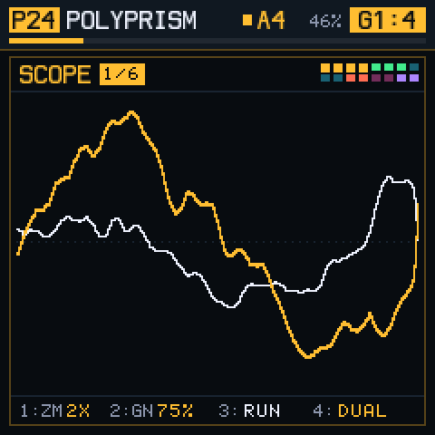

The Spark
Pluck, bow, or blow into the voice. Morph seamlessly from pure Sine through Triangle, Saw, and Variable-Width Pulse, mix in crusty vintage Sample & Hold noise for breathy chiff, or dial in a sharp acoustic Pluck transient.
Adrift transforms the pocket-sized M-VAVE FM-1 into a 16-voice, 6-part Bucket-Brigade Resonator synthesizer, capable of plucked guitars, bowed cellos, buzzing sitars, granular clouds, hands-free drones, and massive unison leads. Play the real firmware below, or install it straight from your browser.
No command line, drivers, or desktop updater software needed. Plug your M-VAVE FM-1 in via USB, click flash, and start making music in under half a minute. And if you ever want the original M-VAVE FM synth back, you can restore it right here too.
Connect the FM-1 directly to your computer’s USB port (normal playing mode — no button combos required) and make sure it has battery charge.
When prompted by your browser, allow MIDI & System Exclusive (SysEx) access so this page can talk to your synth. Close any DAW that may be locking MIDI ports.
Your FM-1 will briefly switch into update mode, write only the blocks that changed, and automatically restart into Adrift.
Adrift is completely reversible. To return to the factory M-VAVE FM synth, select your official FM-1.fwsc (V15) update file below and click Flash Selected File.
“FM-1 not found”? Double-check that your USB cable carries data (many charging cables only connect power wires) and quit Ableton Live, Logic, or MIDI utilities on Windows that take exclusive control of USB-MIDI ports.
Cable unplugged mid-update? Don’t worry — your FM-1 stays safely inside its update loader. Simply plug the USB cable back in and click Connect & Flash Adrift again; it picks up right where it stopped.
Inspired by Bucket-Brigade Delay physical modeling, every single voice in Adrift works like a real acoustic instrument: an expressive Spark excites a tuned Resonating Body, sculpted by looping envelopes, modulation, and lush studio effects.
Pluck, bow, or blow into the voice. Morph seamlessly from pure Sine through Triangle, Saw, and Variable-Width Pulse, mix in crusty vintage Sample & Hold noise for breathy chiff, or dial in a sharp acoustic Pluck transient.
Each voice feeds a key-tracked Bucket-Brigade Delay line that vibrates at the exact pitch you play. Dampen high frequencies like nylon strings, invert polarity for hollow clarinet & marimba pipes, add metallic sitar buzz with Dispersion, or push Feedback into singing self-oscillation.
Stagger chord strums or create granular clouds with looping ENV 1, lock infinite ambient pads with ENV 2 Drone Hold, animate 23 targets with 3 LFOs and ratcheting Arpeggiators, then run through Stereo Chorus, Ping-Pong Delay, Shimmer Reverb, and Bus Glue.
Adrift gives you 16 voices that you can divide freely across 6 independent Voice Groups. Stack multiple groups on MIDI Channel 1 to build rich multi-layered instruments (like guitar + fifth harmonic + octave shimmer), or put each group on its own MIDI channel to sequence a whole band from one pocket synth.
Play chords where each new note rings out naturally through its own independent BBD resonator.
Trigger all of a group's voices together on every key with analog detune and wide left-right stereo spread.
Drive up to 16 detuned oscillators into a shared stereo resonator pair.
Because the M-VAVE FM-1 has fixed labels printed on its case, select any control below to see what it opens in Adrift, preview the real hardware screens, and learn what Knobs 1–4 do on each page.

Click Play in Emulator on any patch below to load it directly into the live FM-1 at the top of the page. On hardware, turn PRESETS to audition patches non-destructively and press OCT+ to load.
Adrift responds simultaneously to USB-C MIDI and the 3.5 mm TRS MIDI IN jack, complete with velocity, pitch bend, mod wheel, sustain pedal, aftertouch, and tight tempo sync.
In the SEQ (Groups) screen, assign Groups G1–G6 to any MIDI channels 1–16. Drive a Super Bass on Ch 1, plucked chords on Ch 2, a ratcheting arp on Ch 3, and modal drums on Ch 4 — all from one sequencer.
Send standard MIDI Clock from your DAW, Digitakt, or KeyStep and Adrift locks on automatically (30–300 BPM). Both the per-group Arpeggiators and the Master Ping-Pong Delay snap cleanly to musical subdivisions.
Switch full 6-group performances remotely from your controller or DAW: send CC 0 = 0 + Program Change 0–23 for Factory Presets P1–P24, or CC 0 = 1 + Program Change 0–23 for your saved User Presets U1–U24.
| CC # | Section | Musical Parameter | Range / Behavior |
|---|